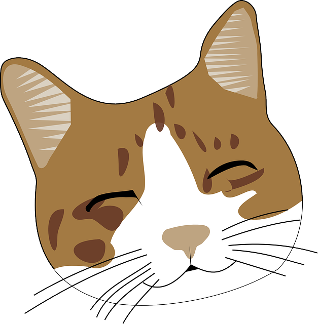
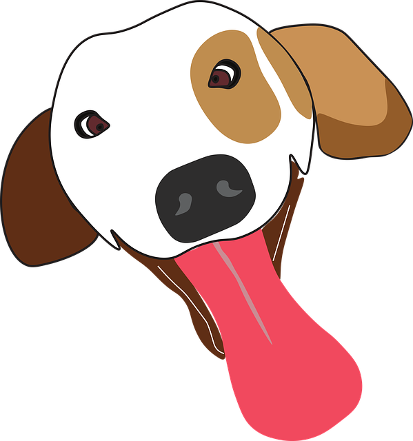

Founded in 2009, Pets To Go is a non-profit and Springfield's only no-kill animal shelter. Since its opening, Pets to Go has placed an estimated 18,000 homeless cats and dogs in new households. Pets To Go works in conjunction with the Animal Rescue League location services to locate the original owners of lost pets as well as finding new homes for abandoned animals. Pets To Go relies on donations from United way, private donations, and volunteers to operate this facility.


 Website created by Lily Ellison of The Bead Dragon
Website created by Lily Ellison of The Bead Dragon